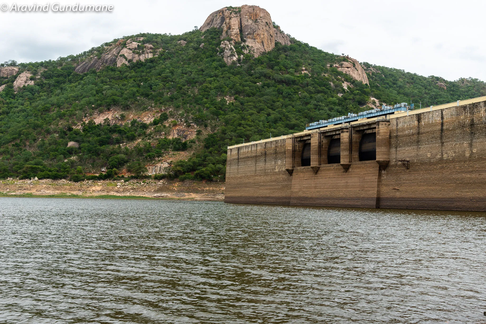

TIRUPATHI
KALYANI DAM

- The Kalyani Dam is a gravity dam constructed across the Swarnamukhi river at Tirupati city and located in Tirupati District of Andhra Pradesh, India.
- This dam is one of the major sources of water supply for Tirupati city and its catchment areas.
- Once filled, the dam can cater to the water needs of Tirupati for at least two years.
- The dam was constructed in the year 1977.
- The dam was constructed across Swarnamukhi River with 25 million cubic meters storage capacity between hills which are part of Seshachalam Hill ranges.